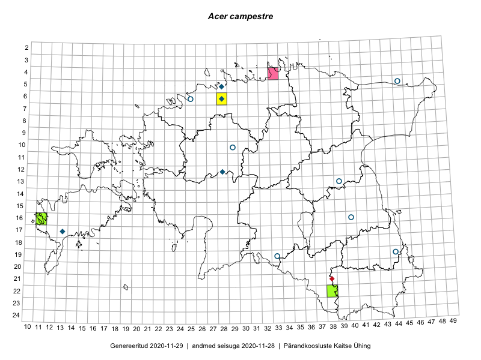

Acer campestre — põldvaher
Aceraceae :: Acer campestre L. (21)

Kaart põhineb 21 kirjel:
vaatlusi 5
herbaareksemplare 16
Taime kaasaegsed ja ajaloolised leiukohad asuvad 13 ruudus.
Tingmärgid ja ruutude arvud periooditi (U1 / V2 )
█ 2006–2020 (3/–)
◆/◇ 1971–2005 (4/2)
○ 1921–1970 (7/0)
+ kuni 1920 (0/0)
× hävinud (–/0)
? kaheldav (–/0)
| Ruut | Leidja(d) | Leiuaeg | Kirje |
|---|---|---|---|
| 06-28 | Hele Möllits | 2019-10-07 | ruut/ala: Acer campestre L. |
| 17-13 | M. Reitalu | 1990–1998 | ruut/ala: Acer campestre L. |
| 16-11 | Triin Reitalu, Mari Reitalu | 2015-08-09–2015-08-10 | ruut/ala: Acer campestre L. |
| 16-11 | Triin Reitalu, Mari Reitalu | 2015-08-09 | ruut/ala: Acer campestre L. |
| 16-11 | Mari Reitalu, Triin Reitalu | 2015-08-09–2015-08-10 | ruut/ala: Acer campestre L. |
| 05-45 | Maret Kask | 1970-06-25 | TAA0020884: Acer campestre L. |
| 19-33 | Taisi Belajeva | 1959-06-10 | TAA0020885: Acer campestre L. |
| 19-33 | Helga Tamm, Heljo Tuvikene | 1959-06-10 | TAA0020886: Acer campestre L. |
| 19-33 | Helga Tamm, Heljo Tuvikene | 1959-06-10 | TAA0020887: Acer campestre L. |
| 16-40 | Silvia Talts | 1958-07-28 | TAA0020889: Acer campestre L. |
| 19-44 | Vilma Kuusk | 1957-08-14 | TAA0020890: Acer campestre L. |
| 05-45 | Helga Tamm | 1955-06-17 | TAA0020894: Acer campestre L. |
| 13-39 | Agnes Ojaveer | 1966-06-21 | TAA0020898: Acer campestre L. |
| 10-29 | Maret Kask | 1964-06-20 | TAA0020899: Acer campestre L. |
| 06-25 | Aleksei Paivel | 1962-06-18 | TALL A000064: Acer campestre L. |
| 12-28 | O. Abner | 2001-07-09 | TALL A000472: Acer campestre L. |
| 06-28 | Tõnu Ploompuu | 1991-07-15 | TALL A008509: Acer campestre L. |
| 05-28 | H. Aasamaa | 1989-10-15 | TAM0083415: Acer campestre L. |
| 22-38 | Peedu Saar | 2015-10-01 | TAA0116537: Acer campestre L. |
| 16-11 | Triin Reitalu, Mari Reitalu | 2015-08-10 | TAA0140167: Acer campestre L. |
| 16-11 | Triin Reitalu, Mari Reitalu | 2015-08-10 | TAA0140168: Acer campestre L. |
Ruutude arv uue atlase andmekogu järgi. Muuhulgas arvestab vanemat herbaariumi, 2005. aasta atlase välitöölehtedelt uuesti digitaliseeritud andmeid jne. Uue atlase andmekogust pärinevad andmed on kaardile kantud siniste sümbolitega.↩︎
Ruutude arv 2005. aasta atlase (Kukk, T., Kull, T., Eesti taimede levikuatlas. Eesti Maaülikool, Põllumajandus- ja Keskkonnainstituut, Tartu, 2005) järgi. Andmeallikana on kasutatud levik.exe programmi, kus igas ruudus on registreeritud vaid uusim leid. Seetõttu on vanemate perioodide kohta andmed puudulikud. Kasutatud levik.exe andmestikus leidub mõningaid kõrvalekaldeid atlase trükis ilmunud versioonist, sagedamini tarnade ja käpaliste seas. Lisaks leidub selles andmestikus valik liike (peamiselt väheste leidudega tulnuktaimed), mille kaarte trükis ei avaldatud. Vana atlase andmed ruutudest, milles ei ole uue atlase andmekogus leide enne 2006. aastat, on kaardil esitatud punaste sümbolitega. Vana atlase andmetel hävinud ja kaheldavaid leiukohti pole hilisemate (taas)leidude põhjal korrigeeritud.↩︎